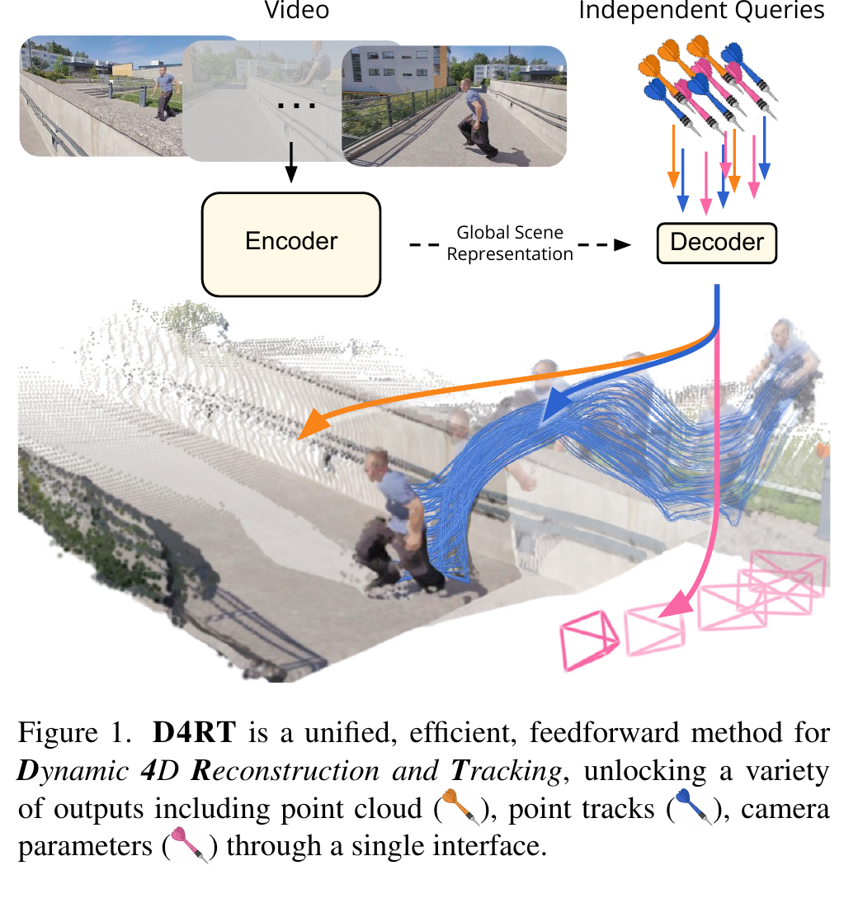
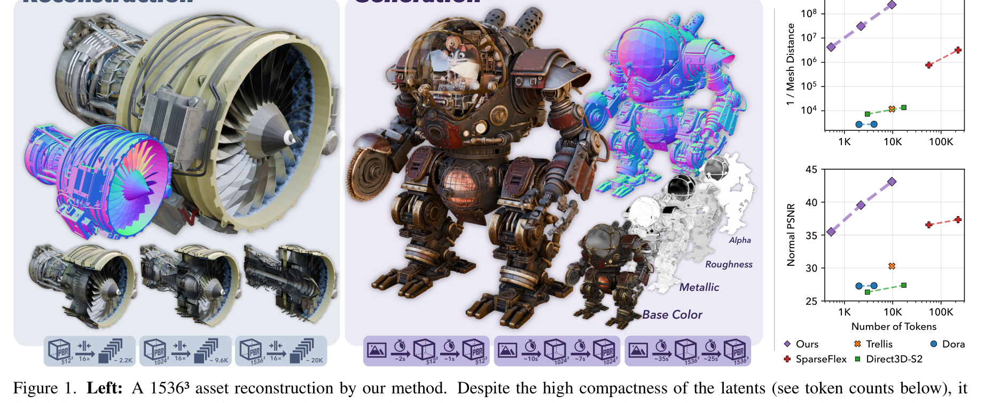
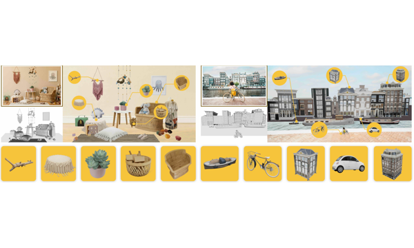
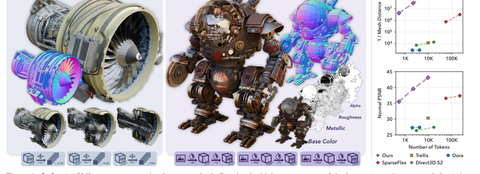
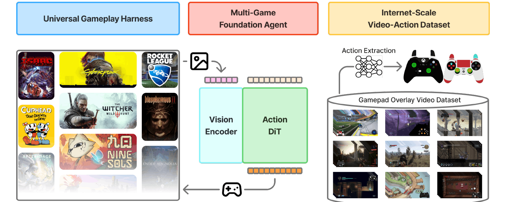
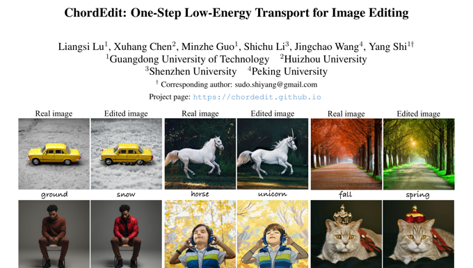
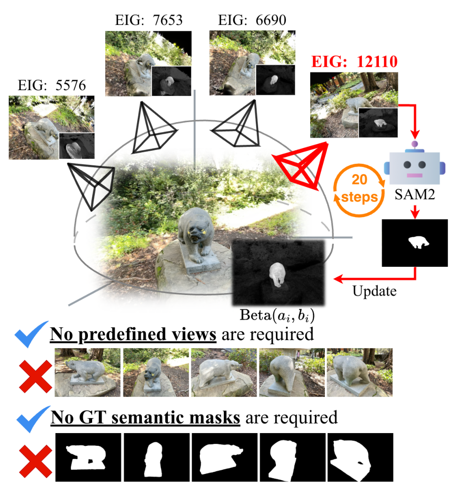
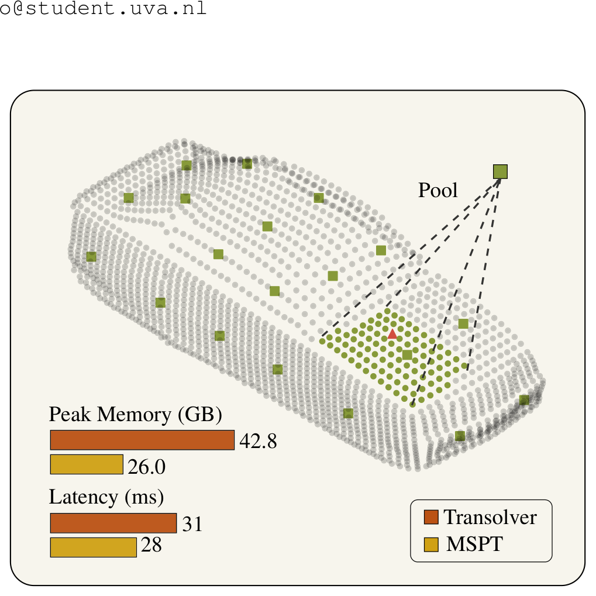
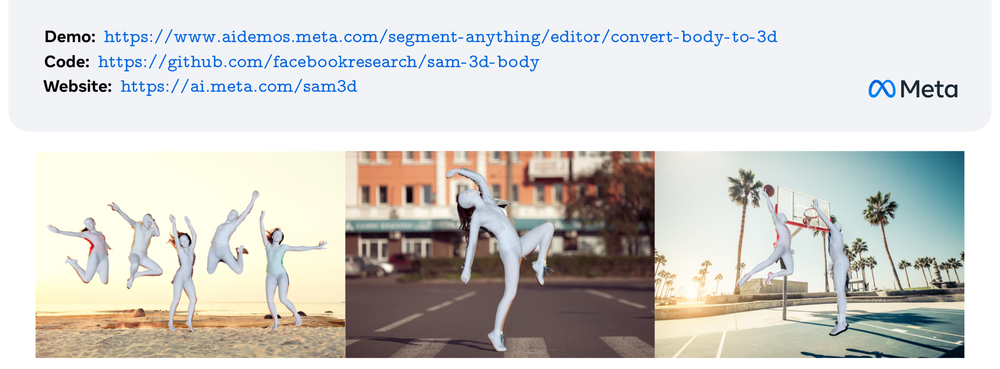

D4RT: Efficiently Reconstructing Dynamic Scenes One D4RT at a Time
Best Paper. 用统一 query decoder 把 4D tracking、depth、pose、all-pixels reconstruction 接到同一个 feedforward Transformer。
领域：3D & Geometry · Dynamic 4D Reconstruction
CVPR 2026 Best Papers Digest按研究领域浏览获奖论文 · Best Paper first
本专题优先收录已公开的 Best Paper、Best Paper Honorable Mention、Best Student Paper 与 Best Student Paper Honorable Mention。首页只做轻量导航；每篇论文页按论文原文、PDF、Supplement 与项目主页做苏格拉底式深读，重点回答 motivation、dataset、pipeline、model、training、experiments、ablations 与 limitations。
奖项状态按项目页、作者/机构公开页面、CVPR/CVF 公开入口与官方社交媒体记录在 manifest 中交叉维护；若 CVPR awards press 页面更新，后续以 manifest 同步。所有 completed 页面均使用本地 PNG 图表。


Best Paper. 用统一 query decoder 把 4D tracking、depth、pose、all-pixels reconstruction 接到同一个 feedforward Transformer。
领域：3D & Geometry · Dynamic 4D Reconstruction

Best Paper Honorable Mention. 从单张自然图像恢复物体 geometry、texture 与 layout，通过 model/human-in-the-loop 数据引擎做真实图像对齐。
领域：3D & Geometry · Foundation Model

Best Student Paper. 用 O-Voxel 保留复杂拓扑与 PBR 材质，再用 SC-VAE 压成 compact SLat，支撑约 4B flow-matching 3D 生成模型。
领域：3D & Geometry · Structured Latents

Best Paper Honorable Mention. 从公开视频中恢复 action labels，训练跨商业游戏的 vision-action foundation policy。
领域：Embodied AI · Gaming Agents

Best Student Paper Honorable Mention. 用低能量 Chord Control Field 替代 naive drift difference，实现 training-free、inversion-free 的 one-step 实时图像编辑。
领域：Image Editing · Transport / One-step T2I Editing

Top Paper (candidate). 把 training-free / camera-free 的 3DGS 分割重写成 Beta–Bernoulli 贝叶斯更新 + 解析 EIG 主动视角选择，并证明贪心选视角有 (1−1/e) 近似最优界。
领域：3DGS Segmentation · Bayesian Active Sampling

Top Paper (candidate). 用 Perceptual 4D Distillation 把冻结 4D 专家的潜在 + 显式表征蒸馏进 MLLM 主干，配时间戳编码与区域级提示，做深度感知的 4D 视频问答；并提出 R4D-Bench。
领域：Multimodal LLM · Region-level 4D VQA

Top Paper (candidate). 把跨视角记忆从注意力 KV cache 换成被梯度更新的 fast weights（TTT/LaCT），实现线性复杂度、长上下文（64 视角）、高分辨率且自回归流式的前馈 3DGS 重建。
领域：Large Reconstruction Model · Test-Time Training

Top Paper (candidate). 用随机 + DINO 语义掩码重建和全局/局部表征对齐，防止少 token 连续 tokenizer 的 posterior collapse，64/128 token 即取得 ImageNet SOTA gFID。
领域：Continuous Tokenizer · Posterior Collapse

Top Paper (candidate). 用 Best-of-Many 单前向出多样未来、再把相邻帧 VFM 特征差压成一个 delta token（视频 3D→1D，1024× 压缩），让生成式世界模型既多样又便宜。
领域：Generative World Model · Delta Tokens

Top Paper (candidate). 用 ball-tree 切空间连续 patch、patch 内做局部注意力 + 对池化 supernode 做全局注意力，复杂度线性项主导，单卡扩展到百万点物理仿真并取得 SOTA 精度。
领域：Neural PDE · Multi-Scale Attention

Top Paper (candidate). 共享编码器 + 身体/手部双解码器拆解优化冲突，用手腕+肘部 re-prompt 缝回一致全身；配 VLM 数据引擎与多阶段网格拟合标注（700 万图），成为首个身手两端同时立住的单模型。
领域：Human Mesh Recovery · Promptable Enc–Dec

Medical AI (CVPR 2026). 首个生物医学掩码扩散 VLM：从固定长度全掩码画布迭代填空，长度成为输入超参而非 EOS 早停；开放式对话领先 ARM、闭合式 VQA 三连 SOTA（84.93/92.31/95.15）。
领域：Medical AI · 掩码扩散语言 VLM

Medical AI (CVPR 2026). 把文本融合从 MaskFormer 的“末端一次点积”改成“每个解码尺度都融一次 + 深监督”：62K+ CT/MRI/PET、1087 概念上训练，11 个未见数据集零样本平均 Dice 70.85（次优 SAT 51.23），真实放射报告整句提示下 50.2 而 SAT 仅 0.0。
领域：Medical AI · 文本提示 3D 医学分割 / 多尺度视觉-语言融合
| 论文 | 奖项 | 类别 | 状态 | 素材/核验 | 阅读 |
|---|---|---|---|---|---|
| D4RT | Best Paper | 3D & Geometry | 完成 | 26 图 · 2 表 · 公式passed | Blog Digest |
| SAM 3D | Best Paper Honorable Mention | 3D & Geometry | 完成 | 16 图 · 4 表 · 公式passed | Blog Digest |
| NitroGen | Best Paper Honorable Mention | Embodied AI | 完成 | 10 图 · 3 表 · 公式passed | Blog Digest |
| Native | Best Student Paper | 3D & Geometry | 完成 | 14 图 · 4 表 · 公式passed | Blog Digest |
| ChordEdit | Best Student Paper Honorable Mention | Image Editing | 完成 | 18 图 · 4 表 · 公式passed | Blog Digest |
| B³-Seg | Top Paper (candidate) | 3DGS / Segmentation | 完成 | 5 图 · 7 表 · 公式passed | Blog Digest |
| 4D-RGPT | Top Paper (candidate) | Multimodal LLM / 4D | 完成 | 5 图 · 4 表 · 公式passed | Blog Digest |
| tttLRM | Top Paper (candidate) | 3D Reconstruction / LRM | 完成 | 5 图 · 6 表 · 公式passed | Blog Digest |
| MacTok | Top Paper (candidate) | Image Tokenizer / Generation | 完成 | 5 图 · 4 表 · 公式passed | Blog Digest |
| Delta Tokens | Top Paper (candidate) | World Model / Video | 完成 | 6 图 · 3 表 · 公式passed | Blog Digest |
| MSPT | Top Paper (candidate) | Neural PDE / Physics | 完成 | 6 图 · 5 表 · 公式passed | Blog Digest |
| SAM 3D Body | Top Paper (candidate) | Human Mesh Recovery / Pose Estimation | 完成 | 6 图 · 7 表 · 公式passed | Blog Digest |
| LLaDA-MedV | Medical AI (CVPR 2026) | Medical AI (CVPR 2026) | 完成 | 1 图 · 6 表 · 公式passed | Blog Digest |
| VoxTell | Medical AI (CVPR 2026) | Medical AI (CVPR 2026) | 完成 | 5 图 · 4 表 · 公式passed | Blog Digest |